- Inhoudsopgave
- 1. Inleiding
- 1.1. Downloaden
- 1.2. Compileren
- 1.3. Audio driver configuratie
- 1.3.1. OSS audio driver
- 1.3.2. ALSA audio driver
- 2. Grafische interface
- 2.1. De hoofd werkbalk
- 2.2. De Opname editor
- 2.3. De Patroon Editor
- 2.4. Mixer
- 2.5. De Instrument Editor
- 2.6. LADSPA plugins
- 2.7. Menu
Hoofdstuk 1. Inleiding
1.1. Downloaden
De laatste stabiele versie van hydrogen is beschikbaar op http://www.hydrogen-music.org
Het is mogelijk om de bron bestanden direct van de CVS snapshot te downloaden met:
bash$ cvs -z3 -d:pserver:anonymous@cvs.sourceforge.net:/cvsroot/hydrogen co -P hydrogen bash$ cd hydrogen bash$ ./autogen.shNadien kun je de instructies volgen zoals hieronder beschreven
1.2. Compileren
Het compileren van hydrogen is afhankelijk van de volgende libraries
-
libsndfile: http://www.mega-nerd.com/libsndfile/
-
qt (>= 3.2): http://www.trolltech.com
-
ALSA (>= 1.x): http://www.alsa-project.com (enkel als je ALSA als audio driver wil gebruiken)
-
Jack Audio Connection Kit (>= 0.80): http://jackit.sourceforge.net (enkel als je Jack als audio driver wil gebruiken)
Na het afhalen en uitpakken van het tar.gz bestand moet je enkel dit uitvoeren:
bash$ cd hydrogen-* bash$ ./configure bash$ make bash$ su -c "make install"
Bekijk voor het compileren eerst nog eens de opties:
bash$ ./configure --help
Als er zich bij het uitvoeren fouten voordoen kun je best hydrogen compileren met de debug optie. Zo kun je de ontwikkelaars op de hoogte brengen van de fout.
bash$ ./configure --enable-debug
Voorlopig zijn er nog geen binaire versies van hydrogen (.rpm,.deb...) Helpers zijn altijd welkom! Compileer hydrogen met gcc versie 3.*. zo voorkom je potentile problemen.
1.3. Audio driver configuratie
Het is zeer belangrijk dat je de juiste audio driver kiest voor jouw systeem, omdat de keuze de perfomantie van je systeem benvloed. Je hebt de keuze tussen Oss, Alsa, Jack en PortAudio. Om het beste uit Hydrogen te halen gebruik je best Jack
1.3.1. OSS audio driver
De Oss audio driver gebruikt /dev/dsp en is gebaseerd op de OSS interface die ondersteund wordt door een groot aantal geluidskaarten die beschikbaar zijn voor linux; zoals gezegd blokeerd Hydrogen het gebruik van /dev/dsp tot Hydrogen gesloten is /dev/dsp is dus onbruikbaar voor andere software.
1.3.2. ALSA audio driver
Hydrogen werkt ook met de ALSA (Advanced Linux Sound Architecture) driver Voor ALSA gelden dezelfde regels als voor OSS, als een programma bijvoorbeeld hw:0,0 gebruikt kan een ander programma deze niet meet gebruiken.
1.3.1. Jack audio driver
Om met de Jack audio driver te werken moet de server werken. Jack Audio Connection Kit, een professionele audio server met een zeer lage response tijd en die interactie mogelijk maakt met andere audio software.We raden Jack sterk aan om zo het beste uit Hydrogen te halen.
1.3.2. PortAudio audio driver
PortAudio is een driver die kan gebruikt worden op verschillende systemen zoals Linux, Unix, BeOS, Mac OS 8,9,X en Windows Iemand die een Mac OS 8,9 of X gebruikt zal dus waarschijnlijk PortAudio moeten gebruiken.
Hoofdstuk 2. Grafische interface
2.1. De hoofd werkbalk
Voor we de belangrijkste vensters overlopen gaan we snel eens kijken naar de werkbalk:

-
 Alle knoppen om te starten, stoppen, doorspoelen, terugspoelen en om het het patroon of de opname te herhalen.
Je kunt ook de spatiebalk gebruiken om te starten en te stoppen.
Alle knoppen om te starten, stoppen, doorspoelen, terugspoelen en om het het patroon of de opname te herhalen.
Je kunt ook de spatiebalk gebruiken om te starten en te stoppen.
-
 Hier kun je schakelen tussen de patroon en opname mode.
Hier kun je schakelen tussen de patroon en opname mode.
-
 Als je het tempo van een nummer wil aanpassen klik je op de + of - knop. Om de metronoom aan of uit te schakelen kan je het onderste knopje gebruiken.
Als je het tempo van een nummer wil aanpassen klik je op de + of - knop. Om de metronoom aan of uit te schakelen kan je het onderste knopje gebruiken.
-
 Op het laatste paneel kun je naast Jack transport aan of uit schakelen ook de MIDI en CPU activiteit zien.
Als Jack transport aan staat zal Hydrogen als 'slaaf' van een ander 'master' programma (vb: Ardour) werken. Dit is enkel mogelijk als de Jack Audio driver geselecteerd is.
Op het laatste paneel kun je naast Jack transport aan of uit schakelen ook de MIDI en CPU activiteit zien.
Als Jack transport aan staat zal Hydrogen als 'slaaf' van een ander 'master' programma (vb: Ardour) werken. Dit is enkel mogelijk als de Jack Audio driver geselecteerd is.
Andere handige sneltoetsen:
-
[CTRL + N] = Nieuwe opname starten
-
[CTRL + O] = Opname openen
-
[CTRL + S] = Opname opslaan
-
[CTRL + E] = Opname exporteren
-
[CTRL + I] = Instelling
-
[CTRL + Q] = Hydrogen afsluiten
-
[CTRL + H] = De documentatie tonen
-
[Backspace] = Liedje of patroon herstarten vanaf het begin.
2.2. De Opname editor
De Opname Editor (Fig. 1) toont het liedje dat we aan het maken zijn. Je ziet de verschillende lagen. Elk gekleurd vierkantje dat in het venster verschijnt vertegenwoordigd een patroon dat zal afgespeeld worden. De patronen kun je bewerken met de Patroon Editor, de lagen kunnen verschillende delen van de opname bevatten (vb intro, refrein, strofe enz...).
De Opname Editor heeft 6 knoppen: 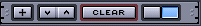
 Maak een nieuw patroon, er wordt naar een naam voor het nieuwe patroon gevraagd.
Maak een nieuw patroon, er wordt naar een naam voor het nieuwe patroon gevraagd.
 Met deze 2 knoppen verplaatst je een laag naar beneden of naar boven.
Met deze 2 knoppen verplaatst je een laag naar beneden of naar boven.
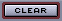 Wist alle sequenties van een layer.
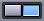
Door middel van deze 2 knoppen kun je wisselen tussen de Selectie( ) en de Teken (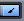) mode van de Opname Editor.
) en de Teken (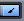) mode van de Opname Editor.
De Teken Mode: In deze mode kan je door gewoon te klikken patronenen toevoegen of verwijderen.

Fig. 1 De Opname Editor in de teken mode
De Selectie Mode: In deze mode kun je stukken selecteren en daarna verplaatsen, kopiren of verwijderen. De geselecteerde stukken worden iets donkerder gekleurd.
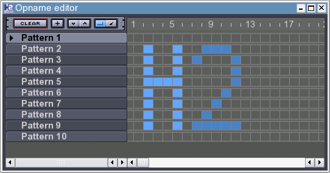
Fig. 2 De Opname Editor met de 2 geselecteerd
Daarna kun je het geselecteerde gebied verplaatsen door het te verslepen. Kopiren doe je door de Ctrl toets in te houden en dan te verslepen. En om de selectie te verwijderen druk je de delete toets in.
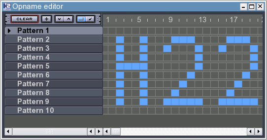
Fig. 3 De Opname Editor nadat de 2 gekopierd werd met de Ctrl toets.
Door rechts op de naam van een laag te klikken kun je het patroon bewerken, kopiren, wissen en de naam van de laag wijzigen.
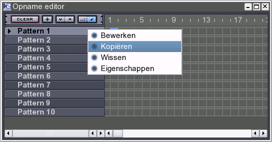
Fig. 4 De Opname Editor
2.3. De Patroon Editor
Het Patroon Editor venster (Fig. 5) laat toe om een patroon te bewerken. Je ziet de verschillende instrument aan de linkerkant. Je kunt beats toevoegen, verwijderen en het volume aanpassen. Beats toevoegen of verwijderen kan eenvoudig door op het rooster te klikken. Het volume pas je aan door de vertikale balk die onder elke noot te vergroten of te verkleinen.
Ook de Patroon Editor heeft enkele knoppen: 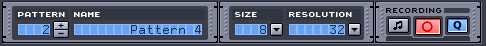
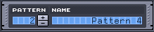 Door op +/- te drukken selecteer je het vorige of volgende patroon, daarnaast zie je de naam verschijnen.
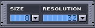 Door een andere "Size" te selecteren verander je de lengte van het patroon, de lengte kan gaan van 1 tel tot 32 tellen. Bij de "Resolution" kun je het aantal beats per tel instellen.
 Hier zie je 3 knoppen. Als de eerste knop geselecteerd is zul je nieuwe noten die toegevoegd worden aan het patroon horen. Met de tweede knop maak je het mogelijk om noten toe te voegen met behulp van een keyboard of een toetsenbord. De laatste zorgt ervoor dat nieuwe noten op het raster geplaatst worden.
Hier zie je 3 knoppen. Als de eerste knop geselecteerd is zul je nieuwe noten die toegevoegd worden aan het patroon horen. Met de tweede knop maak je het mogelijk om noten toe te voegen met behulp van een keyboard of een toetsenbord. De laatste zorgt ervoor dat nieuwe noten op het raster geplaatst worden.
Naast de algemene knoppen heb je nog deze 2 knoppen:
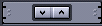 Met deze 2 knoppen kun je een instrument naar boven of naar beneden verplaatsen.
Op de volgende screenshot zie je dat door rechts te klikken op een instrumentnaam je een menu met verschillende mogelijkheden krijgt. Je kunt het instrument dempen of solo laten spelen. Je kunt snel je rooster opvullen met noten. Je kunt een instrument vastleggen, na het wisselen van een drumkit zal het gekozen instrument blijven bestaan, zo kun je samples uit verschillende drumkits gebruiken. En de laatste mogelijkheid kiest een willekeurig volume om zo een natuurlijk klank te bereiken voor het instrument.

Fig. 5 De Patroon Editor
Merk op dat de naam van het afgespeelde instrument afhangt van de geselecteerd drumkit. Deze lijst is gebaseerd op de GMKit, dit is de standaard kit.
Z = Kick
X = Snaar Jazz
C = Snaar Rock
V = Lage Tom
B = Mid Tom
N = Hoge Tom
M = Koe bel
Q = Ride Jazz
W = Ride Rock
E = Instrument Nr. 17 (momenteel niet in gebruik)
R = Instrument Nr. 18 (momenteel niet in gebruik)
T = Instrument Nr. 20 (momenteel niet in gebruik)
Y = Instrument Nr. 22 (momenteel niet in gebruik)
U = Instrument Nr. 24 (momenteel niet in gebruik)
S = Stok
D = Handen klap
G = Gesloten HH
H = Pedaal HH
J = Open HH
2 = Crash
3 = Crash Jazz
5 = Instrument Nr. 19 (momenteel niet in gebruik)
6 = Instrument Nr. 21 (momenteel niet in gebruik)
7 = Instrument Nr. 23 (momenteel niet in gebruik)
Hier is een kleine voorstelling van wat toetsen voor het gemak.

2.4. Mixer
Het Mixer venster (Fig. 6) is handig om het master volume of het instrument volume in te stellen. Je kunt het huidig volume weergeven of verbergen door op
 te klikken. Deze knop
te klikken. Deze knop
 laat je toe om de balans te regelen,
laat je toe om de balans te regelen,
 om dit instrument solo te laten spelen,
om dit instrument solo te laten spelen,
 om het instrument te dempen en
om het instrument te dempen en
 om enkel dit instrument eens af te spelen. Als het instrument gespeeld wordt blinkt deze knop. Een instrument in de Patroon Editor selecteren zorgt ervoor dat deze led
om enkel dit instrument eens af te spelen. Als het instrument gespeeld wordt blinkt deze knop. Een instrument in de Patroon Editor selecteren zorgt ervoor dat deze led
 gaat oplichten.
gaat oplichten.
Na het dubbelklikken op de naam van een instrument in de Mixer zie je de Instrument Editor, in het volgende hoofdstuk wordt deze uitvoerig besproken.
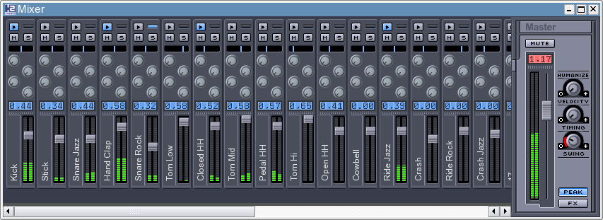
Fig. 6 De Mixer
De 3 draaiknoppen aan de rechterkant van de master fader dienen om je opname menselijker te laten klinken, zo kun je een beetje swing toevoegen.
Als je op klikt krijg je een extra scherm in je mixer, dit scherm dient samen met de 4 draaiknoppen die je per instrument beschikbaar hebt om de effecten te regelen voor een instrument. In het hoofdstuk over de LADSPA plugins kom je meer te weten over deze knoppen.
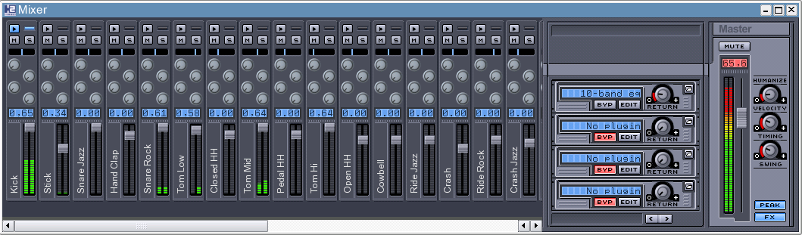
Fig. 7 De Mixer met de FX instellingen
2.5. De Instrument Editor
De Instrument Editor heeft 2 tabbladen. Het Instrument tabblad bevat verschillende knoppen om basis effecten op het instrument toe te passen. In het tweede tabblad kun je een nieuwe laag een instrument toevoegen.

Fig. 8 De Instrument Editor
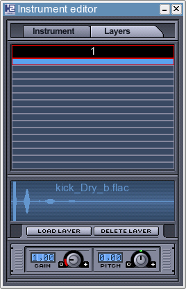
Fig. 9 De Instrument Editor
2.6. LADSPA plugins
Hydrogen kan ook effecten toevoegen aan de instrumenten door gebruik te maken van LADSPA plugins. Je moet LADPSA genstalleerd hebben op je computer, je kan het hier afhalen: http://www.ladspa.org . Het wordt pas echt leuk als je meer van deze paketten gaat installeren, het enige wat je moet uitvoeren is "make && make install"
SWH-Plugin beschikbaar op http://plugin.org.uk. Merk op dat je voor het installeren eerst FFTW (http://www.fftw.org) installeert.
CMT beschikbaar op http://www.ladspa.org.
TAP beschikbaar op http://tap-plugins.sf.net.
Als ze genstalleerd zijn open dan een liedje waar je enkele effecten wil aan toevoegen. Open de Mixer en klik op
 je krijgt het volgende te zien:
je krijgt het volgende te zien:

Fig. 10 De effecten van de mixer
Selecteer een van de vier effect kanalen en klik op deze knop
 , daarna op "Selecteer FX": dit toont een ander venster (Fig. 12) dat je laat kiezen tussen de genstalleerde effecten, ze zijn alfabetisch gesorteerd en gegroepeerd. Als je een effect hebt geselecteerd vergeet dan niet om op "Schakel aan" te drukken, wijzig enkele parameters en keer uiteindelijk terug naar de Mixer en start de opname! Elke ronde knop op een Instrument kanaal in de Mixer regelt het volume van een effect op het instrument. De bovenste knop is voor effect 0 en de onderste voor effect 3.
, daarna op "Selecteer FX": dit toont een ander venster (Fig. 12) dat je laat kiezen tussen de genstalleerde effecten, ze zijn alfabetisch gesorteerd en gegroepeerd. Als je een effect hebt geselecteerd vergeet dan niet om op "Schakel aan" te drukken, wijzig enkele parameters en keer uiteindelijk terug naar de Mixer en start de opname! Elke ronde knop op een Instrument kanaal in de Mixer regelt het volume van een effect op het instrument. De bovenste knop is voor effect 0 en de onderste voor effect 3.

Fig. 11 Het LADSPA eigenschappen venster.
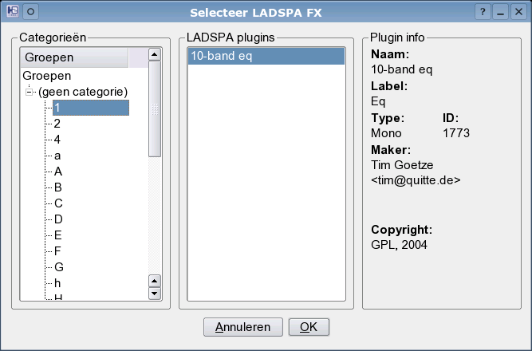
Fig. 12 Selecteer een effect.
2.7. Menu
Bestand -->
-
Nieuw: maakt een nieuw liedje aan.
-
Open: om een liedje openen
-
Open voorbeeld: op een voorbeld liedje
-
Open recent: toont een lijst van de 4 laatst geopende bestanden
-
Opslaan: slaat het huidige liedje op.
-
Opslaan als: slaat het liedje op onder een andere bestandsnaam.
-
Exporteer: exporteer het liedje naar een wav bestand
-
Exporteer naar MIDI: exporteer het liedje naar een mid bestand
-
Instellingen: hier kun je de voorkeuren aanpassen
-
Afsluiten: sluit Hydrogen af.
Beeld -->
-
Toon mixer
-
Toon opname editor
-
Toon patroon editor
-
Toon drumkit manager
-
Toon instrument editor
Help -->
-
Handleiding
-
Over
2.7.1. Instellingen
In de "Audio Systeem" tab (Fig. 13) is het mogelijk om een andere audio driver te selecteren. Je kan ook de buffergroote instellen en de sample rate. Als je JACK selecteerd en "Maak Track Outputs mogelijk" geslecteerd is zal elk instrument op een ander JACK kanaal spelen. Als "Verbind Standaard uitvoer paar" aangevinkt is zal je Hydrogen een master kanaal maken waarin alle instrumenten worden afgespeeld. Als je op de "Midi Systeem" (Fig. 14) tab klikt heb je de mogelijkheid om een MIDI apparaat te kiezen en één of alle kanalen te selecteren. In de "Voorkomen" (Fig. 15) tab kun je de groote van het lettertype veranderen, de snelheid van de Mixer falloff, de ordening van de vensters en de stijl van de QT elementen.
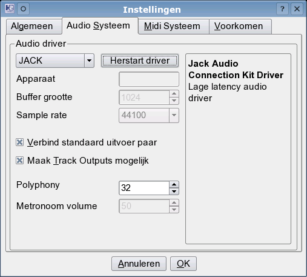
Fig. 13 De "Audio Systeem" tab

Fig. 14 De "Midi Systeem" tab
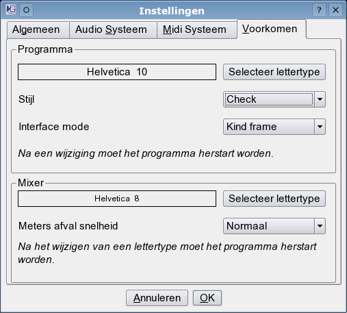
Fig. 15 De "Voorkomen" tab
2.7.2. Drumkit manager
De drumkit manager toont alle opties van drumkits, de geluiden die gebruikt worden per spoor dat beschikbaar is om zo een gepaste "groove" te bekomen die aangepast is aan het genre zoals bijvoorbeeld disco, rock,... Om een goed idee te krijgen van de gebruikte geluiden is het aangeraden om eens naar het voorbeeld liedje te luisteren dat meegeleverd is met de drumkit.
In het eerste tabblad (Fig. 16) kun je drumkits laden of verwijderen. Je ziet ook een korte beschrijving per drumkit. Op figuur 17 kun je zien hoe je extra info over de drumkit kunt opslaan. Via het tabblad "Importeer" (Fig. 18) kun je een drumkit (.h2drumkit) importeren. Zoals je een drumkit importeert kun je ook een drumkit exporteren (Fig. 19).

Fig. 16 Drumkit laden. Kies een drumkit uit de lijst.
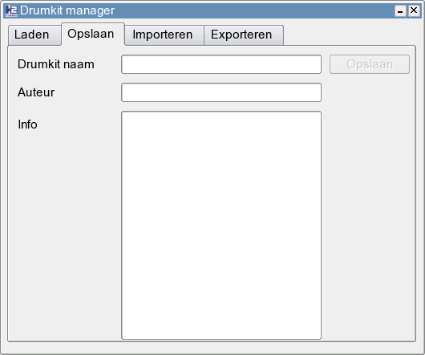
Fig. 17 Een drumkit opslaan.
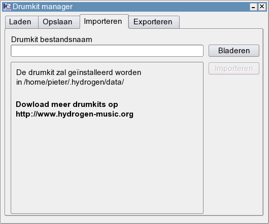
Fig. 18 Een drumkit importeren.

Fig. 19 Een drumkit exporteren.